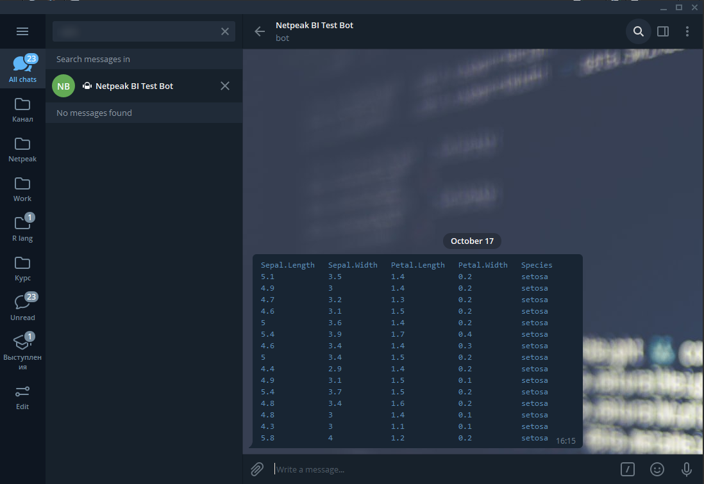
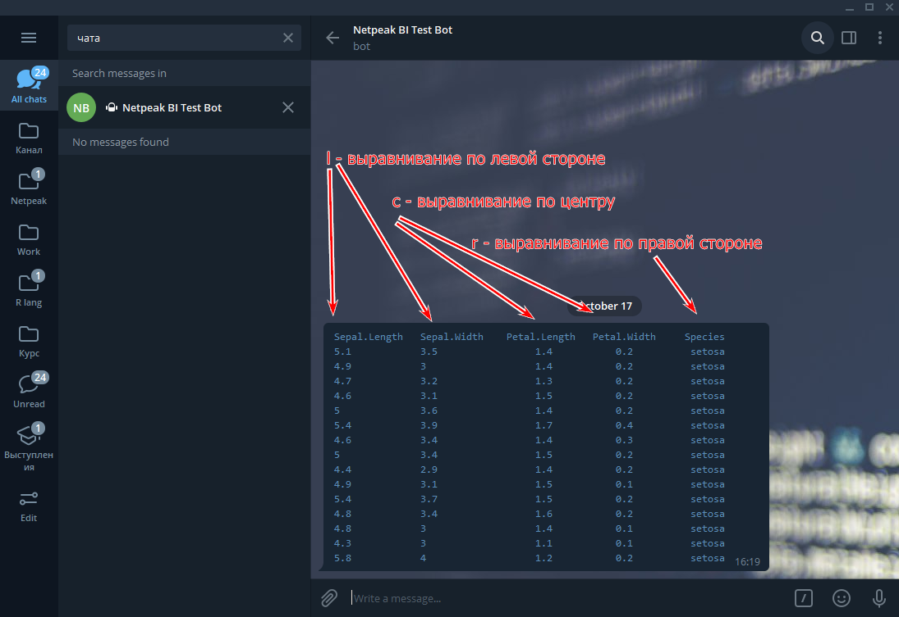
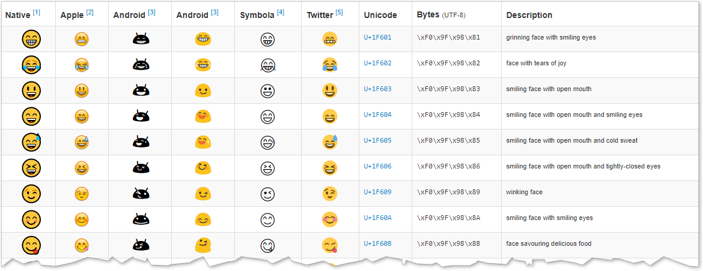
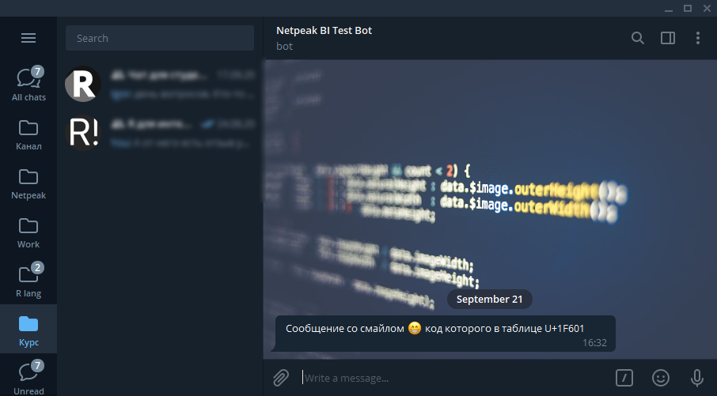

Пишем telegram бота на языке R (часть 1): Создаём бота, и отправляем с его помощью сообщения в telegram
Аудитория telegram ежедневно растёт с геометрической прогрессией, этому способствует удобство мессенджера, наличие каналов, чатов, и конечно возможность создавать ботов.
Боты могут использоваться в совершенно разных целях, от автоматизации коммуникации с вашими клиентами до управления вашими собственными задачами.
По сути через бота можно используя telegram выполнять любые операции: отправлять, либо запрашивать данные, запускать задачи на сервере, собирать информацию в базу данных, отправлять электронные письма и так далее.
Я планирую написать серию статей, о том, как на языке R работать с telegram bot API, и писать ботов под свои нужды.
В этой, первой статье мы разберёмся как создать телеграм бота, и отправлять с его помощью уведомления в telegram.
В результате у нас получится бот, который будет проверять статус последнего выполнения всех задач в планировщике заданий Windows, и отправлять вам уведомления, если какие-то завершились ошибкой.
Но цель этой серии статей заключается не в том, что бы научить вас писать бота под определённую, узкую задачу, а в целом познакомить с синтаксисом пакета telegram.bot, и примерами кода, с помощью которых вы сможете писать ботов, под решение собственных задач.
Изначально статья была опубликована на Хабре
Все статьи из серии “Пишем telegram бота на языке R”
- Создаём бота, и отправляем с его помощью сообщения в telegram
- Добавляем боту поддержку команд и фильтры сообщений
- Как добавить боту поддержку клавиатуры
- Построение последовательного, логического диалога с ботом
- Управление правами пользователей бота
Содержание
Если вы интересуетесь анализом данных возможно вам будут интересны мои telegram и youtube каналы. Большая часть контента которых посвящены языку R.
- Создание телеграм бота
- Установка пакета для работы с телеграм ботом на R
- Отправка сообщений из R в Telegram
- Как отправить таблицу (data.frame) в telegram
- Как добавить в сообщение Emoji
- Проверка планировщика задач Windows, и отправка уведомления о задачах, работа которых была завершена аварийно
- Настройка расписания запуска проверки задач
- Заключение
Создание телеграм бота
Для начала нам необходимо создать бота. Делается это с помощью специального бота BotFather, переходим по ссылке и пишем боту /start.
После чего вы получите сообщение со списком команд:
Сообщение от BotFather
I can help you create and manage Telegram bots. If you're new to the Bot API, please see the manual (https://core.telegram.org/bots).
You can control me by sending these commands:
/newbot - create a new bot
/mybots - edit your bots [beta]
Edit Bots
/setname - change a bot's name
/setdescription - change bot description
/setabouttext - change bot about info
/setuserpic - change bot profile photo
/setcommands - change the list of commands
/deletebot - delete a bot
Bot Settings
/token - generate authorization token
/revoke - revoke bot access token
/setinline - toggle inline mode (https://core.telegram.org/bots/inline)
/setinlinegeo - toggle inline location requests (https://core.telegram.org/bots/inline#location-based-results)
/setinlinefeedback - change inline feedback (https://core.telegram.org/bots/inline#collecting-feedback) settings
/setjoingroups - can your bot be added to groups?
/setprivacy - toggle privacy mode (https://core.telegram.org/bots#privacy-mode) in groups
Games
/mygames - edit your games (https://core.telegram.org/bots/games) [beta]
/newgame - create a new game (https://core.telegram.org/bots/games)
/listgames - get a list of your games
/editgame - edit a game
/deletegame - delete an existing game
Для создания нового бота отправляем команду /newbot.
BotFather попросит вас ввести имя и логин бота.
BotFather, [25.07.20 09:39]
Alright, a new bot. How are we going to call it? Please choose a name for your bot.
Alexey Seleznev, [25.07.20 09:40]
My Test Bot
BotFather, [25.07.20 09:40]
Good. Now let's choose a username for your bot. It must end in `bot`. Like this, for example: TetrisBot or tetris_bot.
Alexey Seleznev, [25.07.20 09:40]
@my_test_bot
Имя вы можете ввести произвольное, а логин должен заканчиваться на bot.
Если вы всё сделали правильно, то получите следующее сообщение:
Done! Congratulations on your new bot. You will find it at t.me/my_test_bot. You can now add a description, about section and profile picture for your bot, see /help for a list of commands. By the way, when you've finished creating your cool bot, ping our Bot Support if you want a better username for it. Just make sure the bot is fully operational before you do this.
Use this token to access the HTTP API:
123456789:abcdefghijklmnopqrstuvwxyz
For a description of the Bot API, see this page: https://core.telegram.org/bots/api
Далее вам понадобится полученный API токен, в моём примере это 123456789:abcdefghijklmnopqrstuvwxyz.
Более подробно о возможностях BotFather можно узнать из этой публикации. На этом шаге подготовительные работы по созданию бота завершены.
Установка пакета для работы с телеграм ботом на R
Я предполагаю, что у вас уже установлен язык R, и среда разработки RStudio. Если это не так, то вы можете посмотреть данный видео урок о том, как их установить.
Для работы с Telegram Bot API мы будем использовать R пакет telegram.bot.
Установка пакетов в R осуществляется функцией install.packages(), поэтому для установки нужного нам пакета используйте команду install.packages("telegram.bot").
Более подробно узнать об установке различных пакетов можно из этого видео.
После установки пакета его необходимо подключить:
library(telegram.bot)
Отправка сообщений из R в Telegram
Созданного вами бота можно найти в Telegram по заданному при создании логину, в моём случае это @my_test_bot.
Отправьте боту любое сообщение, например “Привет бот”. На данный момент это нам надо для того, что бы получить id вашего с ботом чата.
Теперь в R пишем следующий код.
library(telegram.bot)
# создаём экземпляр бота
bot <- Bot(token = "123456789:abcdefghijklmnopqrstuvwxyz")
# Запрашиваем информацию о боте
print(bot$getMe())
# Получаем обновления бота, т.е. список отправленных ему сообщений
updates <- bot$getUpdates()
# Запрашиваем идентификатор чата
# Примечание: перед запросом обновлений вы должны отправить боту сообщение
chat_id <- updates[[1L]]$from_chat_id()
Изначально мы создаём экземпляр нашего бота функцией Bot(), в качестве аргумента в неё необходимо передать полученный ранее токен.
Хранить токен в коде считается не лучшей практикой, поэтому вы можете хранить его в переменной среды, и считывать его из неё. По умолчанию в пакете telegram.bot реализована поддержка переменных среды следующего наименования: R_TELEGRAM_BOT_ИМЯ_ВАШЕГО_БОТА. Вместо ИМЯ_ВАШЕГО_БОТА подставьте имя которое вы задали при создании, в моём случае будет переменная R_TELEGRAM_BOT_My Test Bot.
Создать переменную среды можно несколькими способами, я расскажу о наиболее универсальном и кроссплатформенном. Создайте в вашей домашней директории (узнать её можно с помощью команды path.expand("~")) текстовый файл с названием .Renviron. Сделать это также можно с помощью команды file.edit(path.expand(file.path("~", ".Renviron"))).
И добавьте в него следующую строку.
R_TELEGRAM_BOT_ИМЯ_ВАШЕГО_БОТА=123456789:abcdefghijklmnopqrstuvwxyz
Далее вы можете использовать сохранённый в переменной среды токен с помощью функции bot_token(), т.е. вот так:
bot <- Bot(token = bot_token("My Test Bot"))
Метод getUpdates()позволяет нам получить обновления бота, т.е. сообщения которые были ему отправлены. Метод from_chat_id(), позволяет получить идентификатор чата, из которого было отправлено сообщение. Этот идентификатор нам нужен для отправки сообщений от бота.
Помимо id чата из объекта полученного методом getUpdates() вы получаете и некоторую другую полезную информацию. Например, информацию о пользователе, отправившем сообщение.
updates[[1L]]$message$from
$id
[1] 000000000
$is_bot
[1] FALSE
$first_name
[1] "Alexey"
$last_name
[1] "Seleznev"
$username
[1] "AlexeySeleznev"
$language_code
[1] "ru"
Итак, на данном этапе у нас уже есть всё, что необходимо для отправки сообщения от бота в телеграм. Воспользуемся методом sendMessage(), в который необходимо передать идентификатор чата, текст сообщения, и тип разметки текста сообщения. Тип разметки может быть Markdown или HTML и устанавливается аргументом parse_mode.
# Отправка сообщения
bot$sendMessage(chat_id,
text = "Привет, *жирный текст* _курсив_",
parse_mode = "Markdown"
)
Если вам необходимо отправить сообщение от бота не в чат, а в канал, то в chat_id указывайте адрс вашего канала, например '@MyTGChannel'.
Основы форматирования Markdown разметки:
- Жирный шрифт выделяется с помощью знака *:
- пример:
*жирный шритф* - результат: жирный шритф
- Курсив задаётся нижним подчёркиванием:
- пример:
_курсив_ - результат: курсив
- Моноширинный шрифт, которым обычно выделяется программный код, задаётся с помощью апострофов — `:
- пример:
моноширинный шрифт - результат:
моноширинный шрифт
Основы форматирования HTML разметки:
В HTML вы заворачиваете часть текста, которую надо выделать, в теги, пример <тег>текст</тег>.
- <тег> — открывающий тег
- </тег> — закрывающий тег
Теги HTML разметки
<b>— жирный шрифт- пример:
<b>жирный шрифт</b> - результат жирный шрифт
<i>— курсив- пример:
<i>курсив</i> - результат: курсив
— моноширинный шрифт- пример:
моноширинный шрифт - результат:
моноширинный шрифт
Помимо текста вы можете отправлять и другой контент используя специальные методы:
# Отправить изображение
bot$sendPhoto(chat_id,
photo = "https://telegram.org/img/t_logo.png"
)
# Отправка голосового сообщения
bot$sendAudio(chat_id,
audio = "http://www.largesound.com/ashborytour/sound/brobob.mp3"
)
# Отправить документ
bot$sendDocument(chat_id,
document = "https://github.com/ebeneditos/telegram.bot/raw/gh-pages/docs/telegram.bot.pdf"
)
# Отправить стикер
bot$sendSticker(chat_id,
sticker = "https://www.gstatic.com/webp/gallery/1.webp"
)
# Отправить видео
bot$sendVideo(chat_id,
video = "http://techslides.com/demos/sample-videos/small.mp4"
)
# Отправить gif анимацию
bot$sendAnimation(chat_id,
animation = "https://media.giphy.com/media/sIIhZliB2McAo/giphy.gif"
)
# Отправить локацию
bot$sendLocation(chat_id,
latitude = 51.521727,
longitude = -0.117255
)
# Имитация действия в чате
bot$sendChatAction(chat_id,
action = "typing"
)
Т.е. например с помощью метода sendPhoto() вы можете отправить сохранённый в виде изображения график, который вы построили с помощью пакета ggplot2.
Как отправить в telegram таблицу
К сожалению на момент написания статьи telegram не поддерживает полноценные таблицы в HTML или Markdown, но вы можете иметировать подобие таблицы. Для этого воспользуйтесь кодом представленной ниже функции to_tg_table():
Код функции to_tg_table()
library(purrr)
library(tidyr)
library(stringr)
# функция для перевода data.frame в telegram таблицу
to_tg_table <- function( table, align = NULL, indents = 3, parse_mode = 'Markdown' ) {
# если выравнивание не задано то выравниваем по левому краю
if ( is.null(align) ) {
col_num <- length(table)
align <- str_c( rep('l', col_num), collapse = '' )
}
# проверяем правильно ли заданно выравнивание
if ( length(table) != nchar(align) ) {
align <- NULL
}
# новое выравнивание столбцов
side <- sapply(1:nchar(align),
function(x) {
letter <- substr(align, x, x)
switch (letter,
'l' = 'right',
'r' = 'left',
'c' = 'both',
'left'
)
})
# сохраняем имена
t_names <- names(table)
# вычисляем ширину столбцов
names_length <- sapply(t_names, nchar)
value_length <- sapply(table, function(x) max(nchar(as.character(x))))
max_length <- ifelse(value_length > names_length, value_length, names_length)
# подгоняем размер имён столбцов под их ширину + указанное в indents к-во пробелов
t_names <- mapply(str_pad,
string = t_names,
width = max_length + indents,
side = side)
# объединяем названия столбцов
str_names <- str_c(t_names, collapse = '')
# аргументы для фукнции str_pad
rules <- list(string = table, width = max_length + indents, side = side)
# поочереди переводим каждый столбец к нужному виду
t_str <- pmap_df( rules, str_pad )%>%
unite("data", everything(), remove = TRUE, sep = '') %>%
unlist(data) %>%
str_c(collapse = '\n')
# если таблица занимает более 4096 символов обрезаем её
if ( nchar(t_str) >= 4021 ) {
warning('Таблица составляет более 4096 символов!')
t_str <- substr(t_str, 1, 4021)
}
# символы выделения блока кода согласно выбранной разметке
code_block <- switch(parse_mode,
'Markdown' = c('```', '```'),
'HTML' = c('`', '`'))
# переводим в code
res <- str_c(code_block[1], str_names, t_str, code_block[2], sep = '\n')
return(res)
}
С помощью этой функци вы можете преобразовать любой data.frame и отправить в telegram:
# преобразуем таблицу iris
tg_table <- to_tg_table( head(iris, 15) )
# отправляем таблицу в telegram
bot$sendMessage(194336771,
tg_table,
"Markdown")
В telegram это буедет выглядеть так:

У функции to_tg_table() есть несколько дополнительных аргументов:
- align — выравнивнивание столбцов, тектовая строка, каждая буква соответвует одному столбцу, пример
'llrrc': - l — выравнивание по левой стороне
- r — выравнивание по правой стороне
- c — выравнивание по центру
- indents — количество пробелов для разделения столбцов.
- parse_mode — разметка сообщения, Markdown или HTML.
Пример с выравниванием столбцов:
# преобразуем таблицу iris
tg_table <- to_tg_table( head(iris, 15),
align = 'llccr')
# отправляем таблицу в telegram
bot$sendMessage(194336771,
tg_table,
"Markdown")

Как добавить в сообщение Emoji
Требования к телеграм ботам могут быть разные, в том числе заказчик может попросить вас добавить в сообщения бота какие то Emoji.
Получить полный список доступных смайлов можно по этой ссылке.

Из таблицы нас интересует поле Unicode. Скопиройте код нужного вам смайла, и замените U+ на \U000. Т.е. если вам необходимо отправить смайл, код котого в таблице U+1F601, то в коде на R вам необходимо добавить его в текст сообщения вот так — \U0001F601.
Пример:
bot$sendMessage(chat_id,
'Сообщение со смайлом \U0001F601 код которого в таблице U+1F601')
Результат:

Проверка планировщика задач Windows, и отправка уведомления о задачах, работа которых была завершена аварийно
Для работы с планировщиком заданий Windows вам необходимо установить пакет taskscheduleR, и для удобства работы с данными установим пакет dplyr.
# Установка пакетов
install.packages(c('taskscheduleR', 'dplyr'))
# Подключение пакетов
library(taskscheduleR)
library(dplyr)
Далее с помощью функции taskscheduler_ls() мы запрашиваем информацию о задачах из нашего планировщика. С помощью функции filter() из пакета dplyr мы убираем из списка задач те, которые были успешно выполненны и имеют статус последнего результата 0, и те, которые ещё ни разу не запускались и имеют статус 267011, выключенные задачи, и задачи которые выполняются в данный момент.
# запрашиваем список задач
task <- task <- taskscheduler_ls() %>%
filter(! `Last Result` %in% c("0", "267011") &
`Scheduled Task State` == "Enabled" &
Status != "Running") %>%
select(TaskName) %>%
unique() %>%
unlist() %>%
paste0(., collapse = "\n")
В объекте task у нас теперь список задач, работа которых завершилась ошибкой, этот список нам надо отправить в Telegram.
Если рассмотреть каждую команду подробнее, то:
filter()— фильтрует список задач, по описанным выше условиямselect()— оставляет в таблице только одно поле с названием задачunique()— убирает дубли названийunlist()— переводит выбранный столбец таблицы в векторpaste0()— соединяет названия задач в одну строку, и ставит в качестве разделителя знак перевода строки, т.е.\n.
Всё что нам остаётся — отправить этот результат в телеграм.
bot$sendMessage(chat_id,
text = task,
parse_mode = "Markdown"
)
Итак, на данный момент код бота выглядит вот так:
Код бота проверяющего задачи
# Подключение пакета
library(telegram.bot)
library(taskscheduleR)
library(dplyr)
# инициализируем бота
bot <- Bot(token = "123456789:abcdefghijklmnopqrstuvwxyz")
# идентификатор чата
chat_id <- 123456789
# запрашиваем список задач
task <- taskscheduler_ls() %>%
filter(! `Last Result` %in% c("0", "267011") &
`Scheduled Task State` == "Enabled" &
Status != "Running") %>%
select(TaskName) %>%
unique() %>%
unlist() %>%
paste0(., collapse = "\n")
# если есть проблемные задачи отправляем сообщение
if ( task != "" ) {
bot$sendMessage(chat_id,
text = task,
parse_mode = "Markdown"
)
}
При использовании приведённого выше примера подставьте в код токен вашего бота и ваш идентификатор чата.
Вы можете добавлять условия фильтрации задач, например проверяя только те задачи, которые были созданны вами, исключая системные.
Так же вы можете вынести различные настройки в отдельный файл конфигурации, и хранить в нём id чата и токен. Читать конфиг можно например с помощью пакета configr.
Пример ini конфига
[telegram_bot]
;настройки телеграм бота и чата, в который будут приходить уведомления
chat_id=12345678
bot_token=123456789:abcdefghijklmnopqrstuvwxyz"
Пример чтения переменных из конфига в R
library(configr)
# чтение конфина
config <- read.config('C:/путь_к_конфигу/config.cfg', rcmd.parse = TRUE)
bot_token <- config$telegram_bot$bot_token
chat_id <- config$telegram_bot$chat_id
Настраиваем расписание запуска проверки задач
Наиболее подробно процесс настройки запуска скриптов по расписанию описан в этой статье. Тут я лишь опишу шаги, которые для этого необходимо выполнить. Если какой-то из шагов вам не понятен, то обратитесь к статье на которую я указал ссылку.
Предположим, что мы сохранили код нашего бота в файл check_bot.R. Для того, что бы запланировать регулярный запуск этого файла выполните следующие шаги:
- Пропишите в системную переменную Path путь к папке в которой установлен R, в Windows путь будет примерно таким:
C:\Program Files\R\R-4.0.2\bin. - Создайте исполняемый bat файл, в котором будет всего одна строка
R CMD BATCH C:\rscripts\check_bot\check_bot.R. ЗаменитеC:\rscripts\check_bot\check_bot.Rна полный путь к вашему R файлу. - Далее настройте с помощью планировщика задач Windows расписание запуска, например на каждые пол часа.
Заключение
В этой статье мы разобрались с тем, как создать бота, и отправлять с его помощью различные уведомления в telegram.
Я описал задачу контроля планировщика заданий Windows, но вы можете использовать материал этой статьи для отправки любых уведомлений, от прогноза погоды до котировок акций на фондовой бирже, т.к. R позволяет вам подключиться к огромному количеству источников данных.
В следующей статье мы с вами разберёмся с тем, как добавить боту команды и фильтры сообщений, для того, что он мог не только отправлять уведомления, но и выполнять более сложные действия.